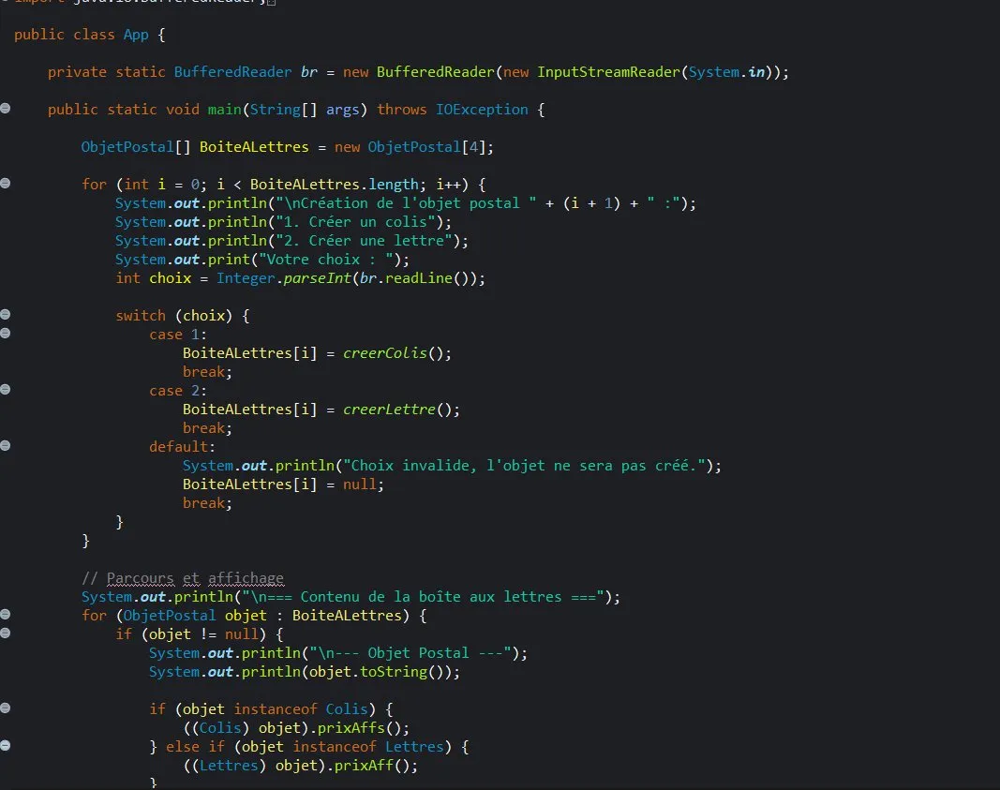
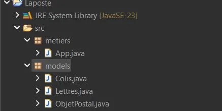

Technologies

Java
Langage unique du projet — POO, héritage, polymorphisme et gestion des entrées utilisateur.
Simulation du système informatique de livraison de La Poste, entièrement en Java. Le programme permet de gérer une boîte aux lettres contenant différents types d'objets postaux — colis et lettres — avec calcul automatique du prix d'affranchissement, le tout fonctionnel en terminal.
L'utilisateur remplit une boîte aux lettres de 4 emplacements. Pour chaque emplacement, il choisit de créer un colis ou une lettre, ou laisse l'emplacement vide. Le programme valide le choix et instancie l'objet correspondant.
Une fois la boîte remplie, le programme parcourt tous les objets et affiche leurs détails via la méthode toString() surchargée de chaque classe.
Chaque type d'objet postal implémente sa propre méthode de calcul : prixAffs() pour les colis (selon le poids) et prixAff() pour les lettres (selon le format). Le polymorphisme permet d'appeler la bonne méthode avec instanceof.
prixAffs()prixAff()

Langage unique du projet — POO, héritage, polymorphisme et gestion des entrées utilisateur.
ObjetPostalinstanceof et surcharge de méthodesBufferedReaderObjetPostal[]toString() dans chaque sous-classe